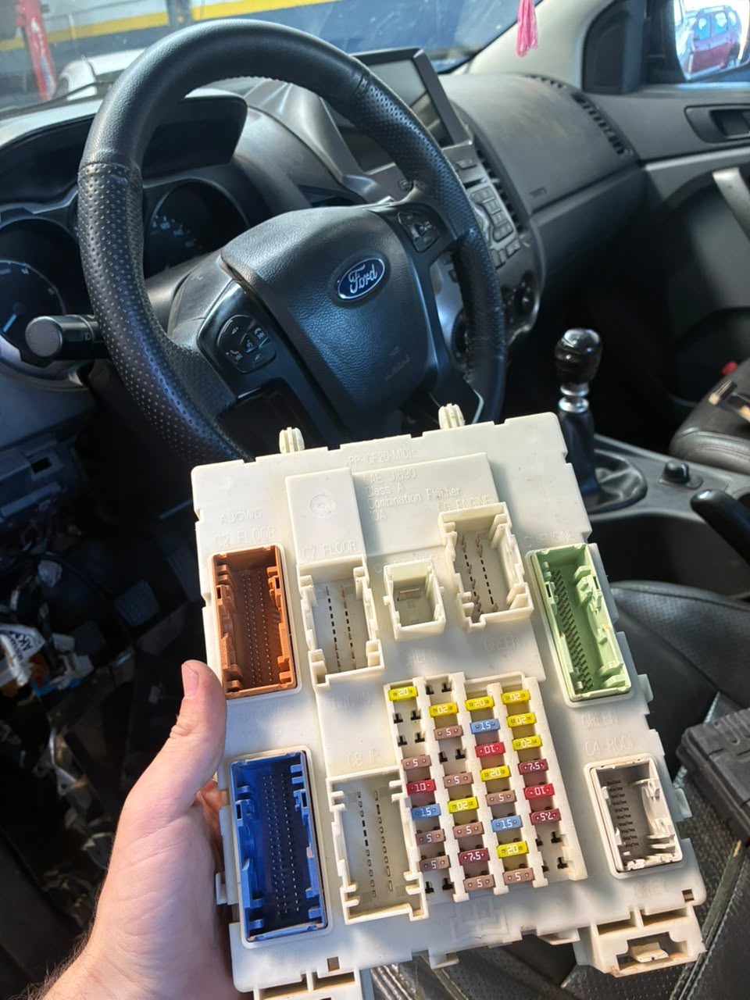
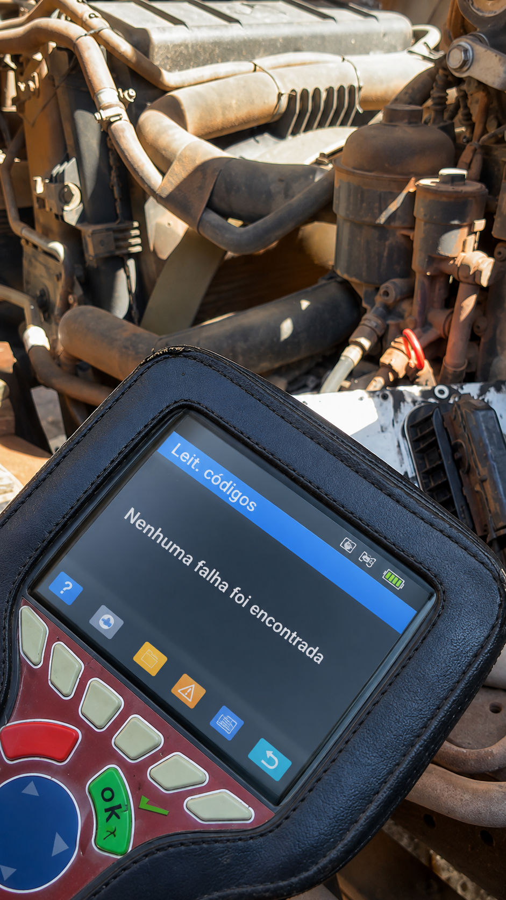
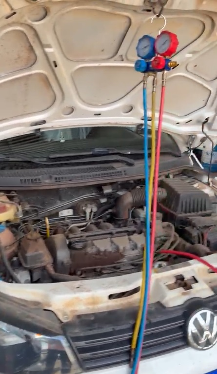
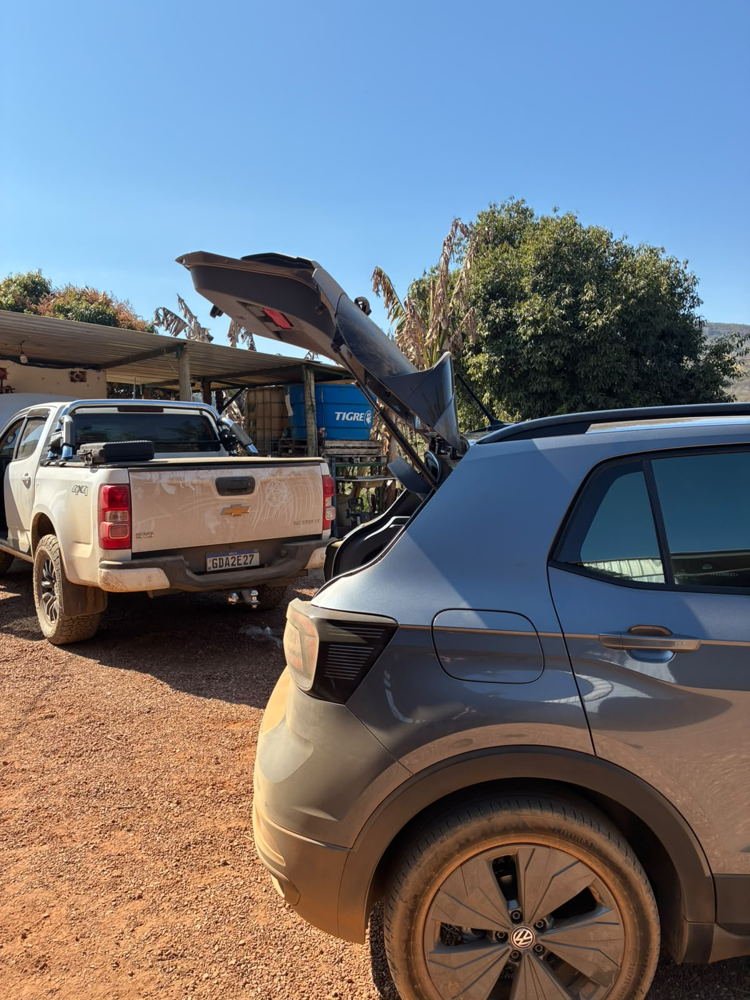

Ford Ranger: falha intermitente no farol.
Atendimento documentado de falha no sistema de iluminação, com farol que não acendia corretamente e apresentava comportamento intermitente.
Ver trabalho completoVeículos atendidos pela Avelar com fotos, vídeos e contexto do serviço realizado.

Atendimento documentado de falha no sistema de iluminação, com farol que não acendia corretamente e apresentava comportamento intermitente.
Ver trabalho completoNovos atendimentos entram aqui conforme forem documentados pela equipe.
Falha intermitente no sistema de iluminação registrada em foto e vídeo.
Ver caso completo →
Reparo no módulo do motor PLD/ECU registrado em foto e vídeo.
Ver caso completo →
Reparo no sistema de ar-condicionado registrado em foto e vídeo.
Ver caso completo →
Complemento de carga do sistema de ar-condicionado registrado em foto e vídeo.
Ver caso completo →
Serviço de calibração eletrônica registrado em foto e vídeo.
Ver caso completo →Envie os dados do veículo e o que ele está apresentando para a equipe.